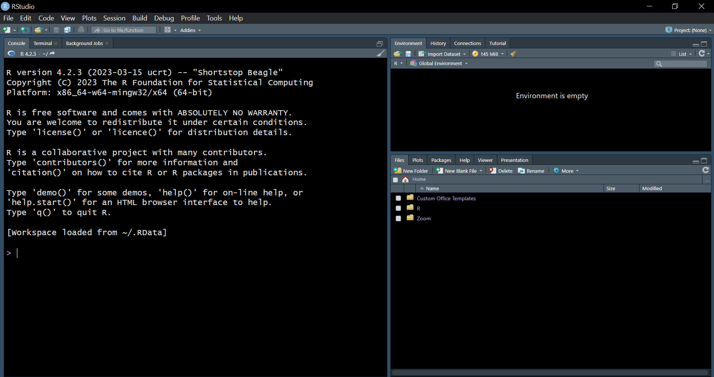

getwd()R refresher
This is a refresher on materials we expect you to be familiar with from your previous methods training.
If you feel comfortable working in R, you may skip this content (or parts of it that you find too easy) and move on to the more advanced topics.
If your R skills are feeling a little rusty or you just want to make sure you are up to speed before progressing to the new topics, this is definitely the place to start!
Installing R and RStudio
First things first. You will need the following software installed in your computer:
A recent installation of R. You can get the latest version of R here.
The latest version of RStudio. You can get the latest version of RStudio here.
If it has been a while since you last updated R and RStudio, it is a good idea to update both programs before proceeding. New versions of R are released quite regularly and it will be useful to ensure that your R installation is up-to-date.
Alternatively, you may use RStudio in your browser using the University of Oslo RStudio Workbench. For the RStudio Workbench you will not need to install anything locally on your computer.
Working in RStudio
Open RStudio. The window that opens should look something like this:

Projects
Before we start working in R (e.g writing R scripts, saving output data, figures, tables, etc.), it is typically a good idea to start a new RStudio project. For instance, you may create a project called “STV4030A”, “DigitalData” or something similar if you would like to work in the same project throughout this course:
Alternatively, you could choose to create different projects for the five different assignments you will complete during this course. Once you are finished with this course and proceed to work on something else, e.g. your MA thesis (!), you would want to do so in a new project.
In either case, working in “RStudio projects” will allow you to keep track of the different files that belong to the project you are working on and to have a specific directory on the computer where those files will be saved. It will also enable you to easily switch between different projects that you may be working on simultaneously.
Directories and paths
Files on your computer are saved in different directories. You can find out which directory you are currently working in by running the following line of R code:
The above line will print the path to the location you are currently working in. If you created a project and are working in that project, it should be the path to the directory where your project lives.
We may want to store different types of files in different subdirectories. For instance, you may create a new folder called “Data” where you will save your datasets and another folder called “Figures” where you will save all the figures you create with R. Having such subdirectories is a good idea! However, it means you will need to keep track of the correct path to the folder when you load/save files from/to those folders. If our project working directory has a folder called “Data” which contains a dataset called “example_data.RData”, the code for loading the dataset would be:
load("Data/example_data.RData")If, “example_data.RData” had been saved in the working directly (i.e. not in a subdirectory), the code would have been
load("example_data.RData")If you are not working in an RStudio project, you will need to set the working directory manually using setwd(). You will need to specify the directory you would like to work in. For instance:
setwd("C:/Users/oyvinsti/OneDrive - Universitetet i Oslo/Documents/STV4030A")If you don’t set the working directory. You will end up working in the default directory. We don’t recommend working in the default directory as it will likely end up being very messy!
If you want to load data from or save output to some directory that is not subdirectory of your working directory, you may do so by writing out the full path. For instance, the following line will load “example_data.RData” from the specified directory no matter what working directory you are currently working in (assuming that the specified directory and file exist on your computer):
load("C:/Users/oyvinsti/OneDrive - Universitetet i Oslo/Documents/STV4030A/Data/example_data.RData")Avoiding such long (and computer-specific) paths is yet another reason to do all your work in RStudio projects!
Working in R-scripts/Quarto documents
You should be writing your code in R-scripts (or in Quarto-documents (which we will introduce later)). You can open a new script by clicking “New file” and then selecting “R script”:
Writing R scripts (or Quarto documents) helps making your work organized and reproducable. To this end, make sure that the code is written in the right sequence: a line of code may depend on code that is above it in the script (but not on code that comes below it).
Think of your script as the recipe for re-creating your analysis. Just as when cooking, the order in which you do things may matter.
Save your R script with an informative name and .R at the end of the file name. The informative file name will help you remember what the script does and the .R will help your computer know that your file is an R script.
When working on your script, you may execute an individual line of code by placing the cursor anywhere on that line and pressing Ctrl+Enter on a PC or Cmd+Enter on a Mac. Executing lines of code line-by-line is great for working interactively in RStudio.
You may also run the entire script or some part of it by highlighting everything/what you would like to run, before pressing Ctrl+Enter/Cmd+Enter. You can also run the entire script by pressing Ctrl+Alt+Enter/Cmd+Alt+Enter.
Alternatively if you have the script saved as a .R-file on your computer, you may run it using the source() function in R:
source("hello_world.R")Your complete scripts should run without errors when you open them in a fresh RStudio session and press Ctrl+Alt+Enter/Cmd+Alt+Enter. For your scripts to run without error, you will need to make sure that the code is written in the correct sequence, that all the packages you use are installed on your computer and loaded in the script, that you load data from the right directories, and that any code that doesn’t run is edited/commented out (we will explain what commenting out something means in a moment).
The console
When you run/execute the code, the code and the results will be printed in the “console” (by default located in the lower left corner in the RStudio window). It is also possible to write the code directly in the console (this may be a good idea for instance for installing packages), but you shouldn’t write the code for anything you later would want to reproduce in the console. Write your code in R-scripts or Quarto documents, so that you can reproduce your work later!
Your (global) environment
The pane called “Environment” (by default located in the upper-right corner of RStudio), lists all the objects currently stored in your global environment. We will talk about such objects later (they might be datasets, individual vectors, regression models, or whatever). You can store something in the environment by using the assignment operator. For instance, we can store the text string “hello world!” in an object called message:
message <- "hello world"In the console we will then only see an echo of this code (it doesn’t print any output) and an object called message will appear in the environment pane.
The object is listed under values as it is a character vector. We can also see a preview of what the vector contains. Since our vector only has a single value (“hello world!”), the preview just displays this value.
You can print out a list of everything stored in your global environment using the ls() function:
ls()[1] "has_annotations" "message" Storing “hello world!” in the object message has the advantage that we can now refer to the object name in our subsequent code (rather than retyping the value(s) each time we want to do something with out message), so we can:
print(message)[1] "hello world"or perhaps we would rather:
print(toupper(message))[1] "HELLO WORLD"All the objects in your global environment should be created from your script and in the sequence in which you will be needing them (so don’t create new objects from the console!). This ensures the reproducability of your work. Whenever you close and reopen RStudio, you can just rerun your script to reproduce your objects.
It is possible to save everything in the current environment like this:
save.image(file = "environment_containing_hello_world_message.RData")When exiting RStudio, you will be asked whether you want to save what is in your environment (unless you turn this feature off in the RStudio settings).
It is usually better to not save what is in your environment and instead re-run your script which should reproduce the all the objects to the environment when you close and reopen RStudio.
To make sure that their scripts are not affected by whatever is already in the global environment, some people like to start their R scripts with the following line, which will remove everything from the global environment:
rm(list = ls())While the above line removes all objects from the global environment. The code you run may, however, still be affected by what you have previously done while working in the same R session, for instance, by packages you have loaded. It is therefore usually better to close and reopen RStudio (without saving what is in the environment) whenever you want to rerun your code in a fresh session.
Global vs. local environment
So far, we have only dealt with the global environment. This might make you wonder if there are also local environments. There are, but these are not so important just yet. We will get back to local environments, when we start defining our own functions.
Commenting your code and organizing your script
It is useful to add comments in your script to explain your code. Such comments make it easier both for others and for your future self to understand what your code does.
You can add comments using the hashtag (#) symbol. Everything that follows the hashtag will be ignored when the code is executed.
message <- "hello world" # This line assigns the string "hello world" to an object called "message"
print(message) # This line prints out whatever is stored in the object called "message"[1] "hello world"As your scripts grow long, it may be a good idea to organize them in different sections with headers. Comments are useful also for this purpose. You make a header using four hashtags on each side of the text of your header:
#### This code just prints out the hello world message ####
message <- "hello world" # This line assigns the string "hello world" to an object called message
print(message) # This line prints out whatever is stored in the object called message[1] "hello world"Alternatively, you can include a single hashtag, followed by a label and some dashes:
#This is another way of making a header--------
message <- "hello world" # This line assigns the string "hello world" to an object called message
print(message) # This line prints out whatever is stored in the object called message[1] "hello world"Finally, comments can be useful when you have code that doesn’t run (and therefore produces errors when you run your script) but that you don’t want to delete just yet (you are still working on it! Or maybe you just find it hard to let go…). In such cases, commenting out the code is useful:
new_message <- "you can also print other messages"
#print(new_massage) this code doesn't run, but I don't know why. Must be a typo or something... I will have another look at it tomorrowThe basics of R programming
Now that we have installed R and Rstudio and repeated the basics of how to organize our work in RStudio, it is time to repeat the basics of R programming.
R as a calculator
An easy way to get started in R is to try using it as a calculator. Try doing some simple calculations such as:
14+65[1] 7978*5[1] 39015/(6-1)[1] 32^-10[1] 0.0009765625When executing the code above, the result of each calculation will be printed in the console, but not stored anywhere. If you want to store the results, you will need to assign them to objects.
Relational operators and logical conditions
We can use relational operators to make R evaluate logical conditions (i.e. statements that are either TRUE or FALSE). For instance, we can ask if 14 is greater than 5:
14 > 5[1] TRUEBecause 14 is in fact greater than 5, R will return the value TRUE.
If we ask whether 14 is equal to 5, R will return FALSE:
14 == 5[1] FALSEHowever, if we ask if whether 14 is greater or equal to 5, the result will be TRUE:
14 >= 5[1] TRUEIf we ask if 14 is not equal to 5, the result will be TRUE:
14 != 5[1] TRUEIf we ask if 14 is smaller than 5, the result will be FALSE:
14 < 5[1] FALSEWe can ask whether 5 is the sequence of integers from 1 to 14, which it is so the result will be TRUE
5 %in% 1:14[1] TRUEUsing such logical conditions will be incredibly useful for instance when we want to recode variables, subset our dataset to only contain observations that satisfy specific conditions, etc.
Logical operators
The logical operators AND (&) and OR (|) are often useful, in particular to write more complex logical conditions. We may for instance ask if 14 is greater than 5 AND 5 is smaller than 2:
14 > 5 & 5 < 2[1] FALSEThe above code evaluates to FALSE because only one of the two statements are true.
If we instead ask whether 14 is greater than 5 OR 5 is smaller than 2, we get that this is true because one of the statements is true:
14 > 5 | 5 < 2[1] TRUEAssigning values to objects
As we have already seen, we may store values in objects. To assign something to an object, we use the assignment operator, <-:
a <- 15/(6-1)Running the above line, will print an echo of the code in the console, but not the result of the calculation. Instead, an object called a containing the result will be saved in our environment. You may print out the value using print() or use it in new calculations
print(a) #printing whatever is stored in a to the console. [1] 3a+5 #adding 5 to whatever is stored in a. [1] 8The object “a” is a vector containing only a single element. If we want to create longer vectors with multiple elements we can use the c() function:
results <- c(14+65, 78*5, 15/(6-1), 2^-10) # storing the results of various calculations in the vector called "results"
Object names
Object names in R must start with a letter and may only include letters, numbers, underscores (_) and periods (.). Letters may be upper and lower case (and R distinguishes between lower and upper case, so if you really want to, you may have multiple objects called “results”, “Results”, “RESULTS”, etc. We don’t recommend this as it may be hard for you to remember the differences between objects called very similar things).
It is useful to have informative object names that describe what is contained in the object. We recommend the snake_case convention for combining multiple words in a object name. This simply means using lowercase letters and separating different words with _. For instance, you you may name a regression model something like linear_regression_with_all_controls.
There, however, also other conventions, such as camelCase in which you you capitalize the first letter of each word. If you prefer this style, you could name your regression model something like linearRegressionWithAllControls.
Do operations on each element of a vector:
We can do operations on all elements of a vector at the same time. For instance, the following line of code, will add 1 to all elements in the vector results:
results + 1[1] 80.000000 391.000000 4.000000 1.000977Notice that because we didn’t assign the output of the above code to an object, the results are just printed out in the console. If we instead run the code
results <- results + 1we will overwrite the object “results” with the new vector in which 1 is added to each element.
Functions
When we are working in R, we are constantly using different functions. For instance, we have already used the function print() to print values to the console. Functions take some input (given in the form of arguments that the function accepts), perform some operation(s), and then returns some output.
Functions have a name followed by a parenthesis. Inside the parenthesis, we can specify one or more arguments. Based on the values on these arguments, the function will produce some result. For instance the function mean() calculates the arithmetic mean (or the average) value of a vector. Let’s try it out:
some_numbers <- c(15, 3, 66, 8, 800) # just creating a vector containing some numbers
mean(x = some_numbers) # taking the mean of the vector some_numbers[1] 178.4We have used the function mean(), which takes the argument x and calculates the mean of x. When calling the function we specified that we want the argument x to take the value some_numbers. Since x is the first argument of mean() we could skip the x = part of the function call. The following code will produce exactly the same result:
mean(some_numbers)[1] 178.4The function mean() also takes two other arguments. The first of these is trim, which specifies “the fraction (0 to 0.5) of observations to be trimmed from each end of x before the mean is computed.” trim defaults to 0, meaning that we take the mean of the entire vector x. We can however, set it to something else, such as 0.2:
mean(some_numbers, trim = 0.2)[1] 29.66667We now removed 20 per cent of the values on each end of the some_numbers before calculating the mean. We will very rarely have use of the trim argument (in fact, Øyvind used this argument for the first time in his life when writing this page!).
The second additional argument of the function mean() will, however, often prove useful! na.rm takes a “logical evaluating to TRUE or FALSE indicating whether NA values should be stripped before the computation proceeds”. In other words, this argument specifies whether missing values should be removed before we calculate the mean. If the vector we calculate the mean of contains missing values and we don’t set na.rm = TRUE our output will just be NA:
some_numbers_with_missing <- c(15, 3,NA, 66, 8, 800) ## just creating a vector containing some numbers
mean(some_numbers_with_missing) ## this will result in NA as na.rm defaults to FALSE[1] NAmean(some_numbers_with_missing, na.rm = TRUE)[1] 178.4We are using functions in R all the time and not just to do mathematical operations such as taking the mean. We use functions to load datasets, fit regression models, export outputs, make graphs, or scrape data from the web. Understanding functions is thus key to mastering R!
Read the documentation!
If you wonder exactly what a function does, what arguments it takes, and what it produces, it is very useful to look at the documentation. You can find the documentation either by running ?function_name or by typing help(topic = function_name). For instance, if we want to look up the documentation for the function mean(), we would run:
?meanor alternatively:
help(topic = mean)The help page containing the documentation for the function should then show up in the “help” pane in RStudio (by default locating in the lower-right corner).
Installing and Loading Packages
When you open a new R session, you immediately have access to some functions, such as mean() or print(), which we have already used. These functions included in “base R” are quite powerful and may suffice for many purposes. However, we can vastly extend the capabilities of R by making use of the thousands of packages, which contains additional functions (and sometimes data).
Some of these packages are distributed with R, meaning that they are automatically installed when you install R (but are still not automatically loaded when you start a new R session). One example is the survival package, which contains functions for something called “event history” or “survival” analysis (which we will not really get into in this course). Before we can use the functions included in such packages, we will need to load them. We load packages using the library() function:
library(survival) # this loads the survival package. Other packages are not distributed with R and need to be downloaded from the internet and installed on your computer before we can use them. One example is the haven package (which we will be using shortly). We can download and install (most) packages using the install.packages() function:
install.packages("haven") # this will install the haven package
Don’t reinstall packages every time you run your code!
You only need to install a package once (that is, at least until you update R and may need to also update your packages). You therefore don’t want to include the calls to install.packages() in your scripts! Including these calls in your scripts will make R reinstall the packages every time you run the script, both slowing down the script and likely causing problems that occur when you try to reinstall packages that are already loaded. It is good practice to install the packages directly in the console, delete the lines installing packages once the packages are installed, or commenting out the lines that install packages if you insist on keeping the code for later use:
#install.packages("haven") # I commented out this line, because haven is already installedInstalling the package is not sufficient, we also need to load it. Once the package is installed on our computer, we can load it using the library() function:
library(haven) # this loads the haven packageWhile we only need to install the packages once, we need to load them every time we want to use them in a new R session. It is useful to load all the packages you are using at the beginning of your scripts. This allows you to discover problems (for instance that a package is not installed) already when you run the first lines of the script later. You may then have a first section of the script that looks something like this:
#### Loading packages that I will be using ####
library(haven)
library(survival)
Functions from different packages that share the same name!
Anyone can develop and publish R packages with new functions. While this is generally a great thing, it also means that there will be many functions from different packages that share the same names. Some function names, such as select(), may be very tempting for developers to use and there will therefore be many functions with names such as select(). If you load different packages that contain functions named select(), you may accidentally be using a different function than you intended to!
There are (at least) two ways of dealing with this problem. First, you can write package_name::function_name to specify which package the function is from. So, if you want to use the function select() from the package dplyr, you write dplyr::select(). This approach is fine if you are only invoking this function once, but it can get a bit tedious if you are repeatedly using select() from dplyr.
A second approach is to use the package conflicted to specify how conflicts between different packages should be resolved. This code will tell R that it should always use select() from dplyr:
library(conflicted)
conflict_prefer(name = "select", winner = "dplyr")[conflicted] Will prefer dplyr::select over any other package.
Different package repositories
Most of the packages you will be installing from the internet are available from a package repository called “The Comprehensive R Archive Network”( CRAN). These packages can simply be installed without specifying any other arguments than the package name when running install.packages() as the default behavior of this function is to install packages from CRAN.
Occasionally, packages may be available only through other repositories. In such cases, we will need to specify the “repos” argument. One example is the package countreg which is only available through a repository called R-Forge. We therefore need to install this package like this:
install.packages("countreg", repos = "http://R-Forge.R-project.org") Other packages will only be available as development versions, for instance through GitHub. One example is the vdemdata package which contains the most recent version of the Varieties of Democracy dataset. To install packages available from GitHub you will need to first install the devtools package (which is available from CRAN!). Note that to install devtools on Windows, you will also need something called RTools installed on your system To install devtools on Mac, you will similarly need something called Xcode or XQuartz.
You can install the vdemdata package from GitHub like this:
#install.packages("devtools") # if you haven't already installed devtools, you will need to run this line
library(devtools)
install_github("vdeminstitute/vdemdata")Loading Data
Now that we know how to use R functions, assign values to objects, and install and load packages, we are ready to start loading datasets into R (and thus also making the political science relevance of what we are up to more obvious!).
We will load the WhoGov dataset which provides “bibliographic information, such as gender and party affiliation, on cabinet members in July every year in the period 1966-2021 in all countries with a population of more than 400,000 citizens”. You can read more about this dataset and get some ideas for what such data can be used for here!. We downloaded the data from https://politicscentre.nuffield.ox.ac.uk/whogov-dataset/ and saved local copies, which you may also want to do if you would like to test the code below.
How we will load the data depends on the format (the type of file). You know what type of file it is by looking at the end of the file name (whether it ends in .csv, .rds, or something else).
.rds-files
One of the formats that the WhoGov dataset is supplied in is .rds. We can load .rds-files using the read_rds() function from the package readr. The read_rds() takes the argument file which we use to specify the location of the file on our computer:
library(readr)
who_gov <- read_rds(file = "../data/WhoGov_within_V2.0.rds")Because file is the first argument, we don’t have to name it in the function call, so we could also run:
who_gov <- read_rds("../data/WhoGov_within_V2.0.rds")The nice WhoGov people have also made the file available as a comma-separated values files (.csv). This is a very nice format to work with. .csv-files are just plain text files in which different columns are separated by commas. You can load .csv-file using the read_delim() function from the readr package (Since we already loaded this packages, we don’t need to reload it):
.csv-files
who_gov <- read_delim(file = "../data/WhoGov_within_V2.0.csv", delim = ",")Rows: 249957 Columns: 32
── Column specification ────────────────────────────────────────────────────────
Delimiter: ","
chr (20): country_isocode, country_name, position, name, title, gender, dead...
dbl (12): ...1, year, id, birthyear, partyfacts_id, core, minister, leader, ...
ℹ Use `spec()` to retrieve the full column specification for this data.
ℹ Specify the column types or set `show_col_types = FALSE` to quiet this message.In addition to the file argument, we also specified the delim argument which tells R how the columns are separated in the file. When columns are separated using ,, we could also use read_csv() which works in exactly the same way as read_delim() except that it will assume that the delimiter is a comma:
who_gov <- read_csv(file = "../data/WhoGov_within_V2.0.csv")Rows: 249957 Columns: 32
── Column specification ────────────────────────────────────────────────────────
Delimiter: ","
chr (20): country_isocode, country_name, position, name, title, gender, dead...
dbl (12): ...1, year, id, birthyear, partyfacts_id, core, minister, leader, ...
ℹ Use `spec()` to retrieve the full column specification for this data.
ℹ Specify the column types or set `show_col_types = FALSE` to quiet this message.The delimiter is, however, not always a comma. Sometimes people use a semicolon or the tabulator to separate the columns. Using read_delim() and specifying the delimiter is useful in such cases. read_delim() also has a number of other arguments you can specify. For instance, you can specify whether white space at the beginning and end of each cell should be removed (trim_ws), whether the first row of the dataset contains variable names (col_names), or whether R should skip some lines in the file when loading it (skip). These arguments have default options that will work well for most dataset, but if you run into trouble loading a .csv-file, it is a good idea to check out these options. You can see the full list options by looking up the documentation:
?read_delimBy default, read_delim() spits out some information about the variables included in the dataset and whether they are read as numbers or as character strings (we will discuss data types later). If you find this behavior annoying, you can turn it off using the show_col_types argument:
who_gov <- read_delim(file = "../data/WhoGov_within_V2.0.csv", delim = ",", show_col_types = FALSE).xlsx-files
Finally, WhoGov is made available in Microsoft Excel (xlsx) format. To load a .xlsx-file, you can use the read_excel() function from the readxl package:
library(readxl)
who_gov <- read_excel(file = "../data/WhoGov_within_V2.0.xlsx")Sometimes Excel-files will contain data in different sheets. The read_excel() function has a sheet argument which allows you to specify which sheet you are interested in.
.dta-files
You will frequently encounter datasets saved in the Stata dataset format (.dta). While WhoGov is not published in this format, we have saved it locally as a .dta-file to illustrate how such files can be loaded.
We can load .dta-files using the read_dta() function from the haven package:
library(haven)
who_gov <- read_dta("../data/WhoGov_within_V2.dta").sav-files
Similarly, we can load SPSS (.sav) files using the read_sav() function which is also available from the haven package:
who_gov <- read_sav("../data/WhoGov_within_V2.sav", encoding = "latin1")To load the SPSS version of the file, we had to specify correct encoding. The “encoding” is just how variables containing text is stored in the file. If you encounter error messages like this one: “Unable to convert string to the requested encoding (invalid byte sequence)”, the problem is typically that R doesn’t recognize the encoding of the file and that you therefore need to specify it. We discuss encoding in more detail here.
.rda and .RData-files
.rda and .RData are R data formats. You can load .rda- and .RData- files using the function load():
load(file = "../data/WhoGov_within_V2.rda")or
load(file = "../data/WhoGov_within_V2.RData")Saving Data
You may save your data in any of the formats we encountered above (as well as many others). However, we will recommend saving your data either as plain text .csv-files or as R datasets (.rda or .RData).
To save a dataset as a .csv-file, we can use the function write_csv() from the package readr:
write_csv(x = who_gov, file = "../data/who_gov_copy.csv")When saving datasets, we both need to specify the data frame that we would like to save (using the x argument) and the file name (and directory) we want to save the data to (using the file argument).
To save a dataset as an R dataset, we can use the save() function:
save(who_gov, file = "../data/who_gov_copy.rda")We can save multiple objects at the same time using save() and these objects don’t necessarily have to be data.frames. We created some other objects above, such as the vectors a and results. We can save them in .rda-file together with the who_gov data.frame if we want to:
save(who_gov,a, results, file = "../data/who_gov_copy_and_other_stuff.rda")If we then load() this file, we will load all these three objects to our environment.
load(file = "../data/who_gov_copy_and_other_stuff.rda")
Saving data in other formats
Functions for saving data to other formats are generally available in the same packages as the functions for loading data. Their function names typically start with write_ followed by the format. To save a dataset as a Stata (.dta) file, you may for instance use write_dta() from haven.
Exploring data.frames and other R objects
The WhoGov data was loaded to R as a data.frame and we assigned it to the object we called who_gov. You will see that who_gov stored under the header “Data” in the Environment pane.
We generally want to store our datasets as data.frames (or as tibbles. The tibble format is just a somewhat modernized version of the traditional R data.frame). data.frames should be organized with the observations (our units of analysis) as rows and variables as columns. We can get a quick glimpse of what the dataset looks like by printing out the first six rows in the console using the function head()
head(who_gov) year country_isocode country_name id position
1 1966 AFG Afghanistan 1 King
2 1966 AFG Afghanistan 2 Prime Min.
3 1966 AFG Afghanistan 3 1st Dep. Prime Min.
4 1966 AFG Afghanistan 4 2nd Dep. Prime Min.
5 1966 AFG Afghanistan 5 Min. Of Agriculture
6 1966 AFG Afghanistan 6 Min. Of Commerce
name title gender birthyear deadyear party
1 Mohammed Zahir <NA> Male NA <NA> independent
2 Maiwandwal Mohammed Hashim <NA> Male NA <NA> pdpa
3 Nur Ahmed Etemadi <NA> Male NA <NA> independent
4 Shalizi Abdus Sattar <NA> Male NA <NA> independent
5 Mohammed Akbar Reza <NA> Male NA <NA> unknown
6 Ali Nur Dr. Male NA <NA> unknown
party_english party_otherlanguage
1 independent independent
2 Progressive Democratic Party of Afghanistan <NA>
3 independent independent
4 independent independent
5 <NA> <NA>
6 <NA> <NA>
whogov_partyid partyfacts_id core minister leader classification
1 AFG-independent 4908 1 0 0 Member, Royal Family
2 AFG-pdpa 8700 1 0 1 Prime Minister
3 AFG-independent 4908 1 0 0 Deputy Prime Minister
4 AFG-independent 4908 1 0 0 Deputy Prime Minister
5 AFG-unknown NA 1 1 0 Minister (Full Rank)
6 AFG-unknown NA 1 1 0 Minister (Full Rank)
portfolio_1 prestige_1 portfolio_2 prestige_2
1 <NA> <NA> <NA> <NA>
2 <NA> <NA> <NA> <NA>
3 <NA> <NA> <NA> <NA>
4 <NA> <NA> <NA> <NA>
5 Agriculture, Food, Fisheries & Livestock Medium <NA> <NA>
6 Industry & Commerce Medium <NA> <NA>
portfolio_3 prestige_3 portfolio_4 prestige_4 m_finance m_defense
1 <NA> <NA> <NA> <NA> 0 0
2 <NA> <NA> <NA> <NA> 0 0
3 <NA> <NA> <NA> <NA> 0 0
4 <NA> <NA> <NA> <NA> 0 0
5 <NA> <NA> <NA> <NA> 0 0
6 <NA> <NA> <NA> <NA> 0 0
m_agriculture m_foreignaffairs
1 0 0
2 0 0
3 0 0
4 0 0
5 1 0
6 0 0What is the unit-of-analysis in the who_gov dataset? Well, we see that the first six rows all cover the country Afghanistan and the year 1966. So, clearly, we are not dealing with a country-year dataset (if so, we would only have one row per country per year). The different observations from the same country-year appear to be different people holding different cabinet positions, so maybe the unit of analysis is the “country-year-position”.
Since we are not sure, we should look up the documentation for the article. Nyrup and Bramwell (2020) write that the dataset “contains yearly data on members of cabinets in 177 countries”, so our impression that the unit of analysis is the country-year-position appears to be correct.
A few other functions are useful for getting a quick overview of how a specific data.frame is structured. First, names() will print out the names of all the variables in the dataset:
names(who_gov) [1] "year" "country_isocode" "country_name"
[4] "id" "position" "name"
[7] "title" "gender" "birthyear"
[10] "deadyear" "party" "party_english"
[13] "party_otherlanguage" "whogov_partyid" "partyfacts_id"
[16] "core" "minister" "leader"
[19] "classification" "portfolio_1" "prestige_1"
[22] "portfolio_2" "prestige_2" "portfolio_3"
[25] "prestige_3" "portfolio_4" "prestige_4"
[28] "m_finance" "m_defense" "m_agriculture"
[31] "m_foreignaffairs" To know what these different variables are and how they are coded, we have to look up the codebook or other documentation. This information is not generally available in R. The codebook for the WhoGov dataset is available online.
Second, we can use dim() to get the dimensions of the data.frame: the number of rows and columns
dim(who_gov)[1] 249957 31We can see that there are 249957 rows (the observations) and 31 columns (the variables). If we prefer, we could also get this information separately using the nrow() and ncol() functions:
nrow(who_gov) # the number of rows[1] 249957ncol(who_gov) # the number of columns[1] 31Third, we can use summary() to get summary statistics for all the variables in the dataset:
summary(who_gov) year country_isocode country_name id
Min. :1963 Length:249957 Length:249957 Min. : 1
1st Qu.:1984 Class :character Class :character 1st Qu.: 354
Median :1998 Mode :character Mode :character Median : 722
Mean :1996 Mean : 817
3rd Qu.:2010 3rd Qu.:1167
Max. :2021 Max. :3564
position name title gender
Length:249957 Length:249957 Length:249957 Length:249957
Class :character Class :character Class :character Class :character
Mode :character Mode :character Mode :character Mode :character
birthyear deadyear party party_english
Min. :1882 Length:249957 Length:249957 Length:249957
1st Qu.:1929 Class :character Class :character Class :character
Median :1944 Mode :character Mode :character Mode :character
Mean :1943
3rd Qu.:1956
Max. :1993
NA's :138417
party_otherlanguage whogov_partyid partyfacts_id core
Length:249957 Length:249957 Min. : 3 Min. :0.0000
Class :character Class :character 1st Qu.:1760 1st Qu.:1.0000
Mode :character Mode :character Median :3343 Median :1.0000
Mean :3419 Mean :0.8672
3rd Qu.:4998 3rd Qu.:1.0000
Max. :9015 Max. :1.0000
NA's :34897
minister leader classification portfolio_1
Min. :0.0000 Min. :0.0000 Length:249957 Length:249957
1st Qu.:0.0000 1st Qu.:0.0000 Class :character Class :character
Median :1.0000 Median :0.0000 Mode :character Mode :character
Mean :0.7194 Mean :0.0352
3rd Qu.:1.0000 3rd Qu.:0.0000
Max. :1.0000 Max. :1.0000
NA's :4
prestige_1 portfolio_2 prestige_2 portfolio_3
Length:249957 Length:249957 Length:249957 Length:249957
Class :character Class :character Class :character Class :character
Mode :character Mode :character Mode :character Mode :character
prestige_3 portfolio_4 prestige_4 m_finance
Length:249957 Length:249957 Length:249957 Min. :0.00000
Class :character Class :character Class :character 1st Qu.:0.00000
Mode :character Mode :character Mode :character Median :0.00000
Mean :0.03546
3rd Qu.:0.00000
Max. :1.00000
m_defense m_agriculture m_foreignaffairs
Min. :0.00000 Min. :0.00000 Min. :0.00000
1st Qu.:0.00000 1st Qu.:0.00000 1st Qu.:0.00000
Median :0.00000 Median :0.00000 Median :0.00000
Mean :0.03273 Mean :0.03201 Mean :0.03509
3rd Qu.:0.00000 3rd Qu.:0.00000 3rd Qu.:0.00000
Max. :1.00000 Max. :1.00000 Max. :1.00000
NA's :1 Inspecting the variables in a data.frame
You can use the $ symbol to refer to specific variables inside a data.frame. Your code will look something like data_frame$variable. For instance, we may continue exploring the dataset by looking at how long the time series is (which years are covered by the data) and how many unique countries are included. Let’s start with the year variable, which available as who_gov$year. We can use range() to learn when the time series starts and ends:
range(who_gov$year)[1] 1963 2021Or we could use summary to get summary statistics for this variable:
summary(who_gov$year) Min. 1st Qu. Median Mean 3rd Qu. Max.
1963 1984 1998 1996 2010 2021 The first observation is from 1963 and the last observation is from 2021. Maybe we want to get a sense of how many observations there are from each year in the time series? If so, we could use table() to get a frequency table showing the number of observations per year:
table(who_gov$year)
1963 1964 1965 1966 1967 1968 1969 1970 1971 1972 1973 1974 1975 1976 1977 1978
14 14 14 2767 2743 2809 2879 2961 3086 3217 3290 3314 3495 3534 3640 3687
1979 1980 1981 1982 1983 1984 1985 1986 1987 1988 1989 1990 1991 1992 1993 1994
3782 3813 3955 3975 4153 4187 4100 4167 4215 4203 4216 4074 4027 4331 4671 4852
1995 1996 1997 1998 1999 2000 2001 2002 2003 2004 2005 2006 2007 2008 2009 2010
5040 5236 5242 5191 5239 5229 5375 5348 5233 5177 5115 5175 5255 5211 5289 5332
2011 2012 2013 2014 2015 2016 2017 2018 2019 2020 2021
5272 5353 5366 5329 5271 5247 5242 5280 5243 5249 5233 The table that R spits out in the console is a little ugly, but it is organized as follows: below each unique value on the variable (here year) it shows the number of observations with that value. So for instance, there are 5239 observations from the year 1999.
We notice that the first year is 1963 and that there are only 14 observations each year for 1963, 1964, and 1965. Combined with our sense that there must have been more than 14 cabinet ministers in the world also in these years and the fact that Nyrup and Bramwell (2020) write that their dataset starts in 1966, this information should make us somewhat suspicious! We will investigate this more below.
For now, we move on to exploring coverage of different countries. The name of the country of each observation is stored in who_gov$country_name. We first want to know how many unique countries there are. Using unique() we can print out all the unique values on who_gov$country_name:
unique(who_gov$country_name) [1] "Afghanistan"
[2] "Albania"
[3] "Algeria"
[4] "Angola"
[5] "Argentina"
[6] "Armenia"
[7] "Australia"
[8] "Austria"
[9] "Azerbaijan"
[10] "Bahrain"
[11] "Bangladesh"
[12] "Belarus"
[13] "Belgium"
[14] "Benin"
[15] "Bhutan"
[16] "Bolivia"
[17] "Bosnia & Herzegovina"
[18] "Botswana"
[19] "Brazil"
[20] "Brunei"
[21] "Bulgaria"
[22] "Burkina Faso"
[23] "Burundi"
[24] "Cambodia"
[25] "Cameroon"
[26] "Canada"
[27] "Cape Verde"
[28] "Central African Republic"
[29] "Chad"
[30] "Chile"
[31] "China"
[32] "Colombia"
[33] "Comoros"
[34] "Costa Rica"
[35] "Croatia"
[36] "Cuba"
[37] "Cyprus"
[38] "Czechoslovakia"
[39] "Czechia"
[40] "Denmark"
[41] "Djibouti"
[42] "Dominican Republic"
[43] "Congo - Kinshasa"
[44] "Ecuador"
[45] "Egypt"
[46] "El Salvador"
[47] "Equatorial Guinea"
[48] "Eritrea"
[49] "Estonia"
[50] "Ethiopia"
[51] "Fiji"
[52] "Finland"
[53] "France"
[54] "Gabon"
[55] "Gambia"
[56] "East Germany"
[57] "Georgia"
[58] "Germany"
[59] "Ghana"
[60] "Greece"
[61] "Grenada"
[62] "Guatemala"
[63] "Guinea"
[64] "Guinea-Bissau"
[65] "Guyana"
[66] "Haiti"
[67] "Honduras"
[68] "Hungary"
[69] "Iceland"
[70] "India"
[71] "Indonesia"
[72] "Iran"
[73] "Iraq"
[74] "Ireland"
[75] "Israel"
[76] "Italy"
[77] "Côte d’Ivoire"
[78] "Jamaica"
[79] "Japan"
[80] "Jordan"
[81] "Kazakhstan"
[82] "Kenya"
[83] "Kuwait"
[84] "Kyrgyzstan"
[85] "Laos"
[86] "Latvia"
[87] "Lebanon"
[88] "Lesotho"
[89] "Liberia"
[90] "Libya"
[91] "Lithuania"
[92] "Luxembourg"
[93] "North Macedonia"
[94] "Madagascar"
[95] "Malawi"
[96] "Malaysia"
[97] "Maldives"
[98] "Mali"
[99] "Malta"
[100] "Mauritania"
[101] "Mauritius"
[102] "Mexico"
[103] "Moldova"
[104] "Mongolia"
[105] "Montenegro"
[106] "Morocco"
[107] "Mozambique"
[108] "Myanmar (Burma)"
[109] "Namibia"
[110] "Nepal"
[111] "Netherlands"
[112] "New Zealand"
[113] "Nicaragua"
[114] "Niger"
[115] "Nigeria"
[116] "North Korea"
[117] "North Vienam"
[118] "Norway"
[119] "Oman"
[120] "Pakistan"
[121] "Panama"
[122] "Papua New Guinea"
[123] "Paraguay"
[124] "Peru"
[125] "Philippines"
[126] "Poland"
[127] "Portugal"
[128] "Qatar"
[129] "Congo - Brazzaville"
[130] "Romania"
[131] "Russia"
[132] "Rwanda"
[133] "São Tomé & Príncipe"
[134] "Saudi Arabia"
[135] "Senegal"
[136] "Serbia"
[137] "Sierra Leone"
[138] "Singapore"
[139] "Slovakia"
[140] "Slovenia"
[141] "Somalia"
[142] "South Africa"
[143] "South Korea"
[144] "South Sudan"
[145] "South Vietnam"
[146] "People's Democratic Republic of Yemen"
[147] "Spain"
[148] "Sri Lanka"
[149] "Sudan"
[150] "Suriname"
[151] "Eswatini"
[152] "Sweden"
[153] "Switzerland"
[154] "Syria"
[155] "Taiwan"
[156] "Tajikistan"
[157] "Tanzania"
[158] "Thailand"
[159] "Timor-Leste"
[160] "Togo"
[161] "Trinidad & Tobago"
[162] "Tunisia"
[163] "Turkey"
[164] "Turkmenistan"
[165] "Uganda"
[166] "Ukraine"
[167] "United Arab Emirates"
[168] "United Kingdom"
[169] "Uruguay"
[170] "United States"
[171] "Soviet Union"
[172] "Uzbekistan"
[173] "Venezuela"
[174] "Vietnam"
[175] "Yemen"
[176] "Yugoslavia"
[177] "Zambia"
[178] "Zimbabwe" Typically, we are not interested in reading this full list. We just want to know how many different countries there are. We can use length() to find out how long a vector is. Using unique() will create vector with all the unique values and finding the length of this vector will tell us how many unique countries there are in the dataset:
length(unique(who_gov$country_name))[1] 178We learn that there are 178 unique country names in the dataset.1
If we want to get a sense of what types of positions the people in the WhoGov dataset held, we can similarly use table() on the who_gov$portfolio_1 which contains a standardized coding of the different types of positions (There was no way for us to know this in advance. We had to look up the WhoGov codebook, which is generally what you should do if you wonder how to use a dataset created by others. )
table(who_gov$portfolio_1)
Ageing & Elderly
125
Agriculture, Food, Fisheries & Livestock
11513
Audit, Oversight & Internal Affairs
1142
Children & Family
1120
Civil Service
2109
Communications & Information
10144
Construction & Public Works
7417
Correctional Services & Police
854
Culture & Heritage
4670
Defense, Military & National Security
11931
Education, Training & Skills
12373
Energy
5750
Enterprises, Companies & Business
2740
Environment
8364
Executive & Legislative Relations
3227
Finance, Budget & Treasury
11046
Foreign Economic Relations
4774
Foreign Relations
11699
General Economic Affairs
3695
Government, Interior & Home Affairs
9348
Health & Social Welfare
10256
Housing
2358
Immigration & Emigration
1149
Industry & Commerce
7471
Justice & Legal Affairs
8037
Labor, Employment & Social Security
6496
Local Government
1616
Minorities
390
Natural Resources
1600
Other
11653
Planning & Development
7611
Political Reform
727
Properties & Buildings
137
Regional
2319
Religion
1545
Science, Technology & Research
2171
Sports
2465
Tax, Revenue & Fiscal Policy
275
Tourism
1684
Transport
3470
Veterans
630
Without Portfolio
2068
Women
835
Youth
453 Changing or adding variables
Just as we can use the assignment operator,<- to create objects, we can use it to create or change variables inside a data.frame. If you run the following line, you will create a new column in the who_gov, which always takes the value of 1.
who_gov$ones <- 1This variable is obviously not super interesting. We would rather have a variable that actually varies. Let’s try to make create a variable called who_gov$female which will take the value 1 if the person is female and 0 otherwise. We will base this variable on the variable who_gov$gender which is already in the dataset and which takes the values “Male”, “Female”, “Other”, and “Unknown”. The function ifelse() is very useful for creating a new variable based on some conditions (for example based on e values on some existing variable):
- 1
- check if the value on `who_gov$gender is “Female”
- 2
- Give those cases the value 1.
- 3
- Giv other cases the value 0.
We now created a new variable called who_gov$female. Since this variable is based on the variable who_gov$gender, we can compare the two variables against each other to verify that the who_gov$female was created correctly. We can use table() to create a cross table:
table(who_gov$female, who_gov$gender)
Female Male Other Unknown
0 0 222937 5 177
1 23170 0 0 0We see that all the observations with “Female” as the value on the who_gov$gender variable has the value 1 on the who_gov$female variable and that all those with other values on the who_gov$gender variable has the value 0 on who_gov$female variable. Woot!
Perhaps we don’t want observations with “Unknown” on who_gov$gender to be coded 0 on the who_gov$female variable? Perhaps giving these a missing value (NA) would be more accurate. If so, we can overwrite the who_gov$female variable like this:
- 1
- Check if the value on `whogov$gender is “Unknown”
- 2
- Give those cases the value NA
- 3
-
Give other cases the value they already have on
who_gov$female
Let’s check that this did what we intended it to do:
table(who_gov$female, who_gov$gender)
Female Male Other Unknown
0 0 222937 5 0
1 23170 0 0 0This looks like expected. However, the people with “Unknown” on who_gov$gender are no longer displayed in the table. This has to do with how R treats missing values. To be absolutely sure, we can use is.na() to find out what values observations that now have NA on who_gov$female have on who_gov$gender:
table(is.na(who_gov$female), who_gov$gender)
Female Male Other Unknown
FALSE 23170 222937 5 0
TRUE 0 0 0 177This confirms that the 177 people with “Unknown” who_gov$gender now have NA on who_gov$female (and there are no other observations with NA on who_gov$female).
ifelse()
ifelse() is incredibly useful for creating and recoding variables. ifelse() takes three arguments. The first argument should be a logical condition. For example is the value on who_gov$gender equal to “Female”. The second argument tells R what should happen if the logical condition is true. In our case, we want to return the value 1 if the condition is true. The third argument tells R what should happen if the condition is false. In our case, we want the value 0 if the condition is false:
Different data types
Variables stored in a data.frame are vectors. More specifically, they are so-called “atomic vectors” meaning that all their values need to be of the same type. What do we mean by type?
In the who_gov data.frame, there are variables of two different types:
- Some of the variables are integers. They are numbers and more specifically “whole numbers” (not fractions/without decimals). We have already seen one example: the variable
who_gov$year. Another example is the variablewho$leaderwhich takes the value of 1 if the person in question was the country leader in the relevant country year and 0 otherwise. Because integers are numbers, we can do various calculations with them. For instance, we can usemean()to calculate the share of observations that are of country leaders:
mean(who_gov$leader)[1] 0.03520205The mean of this binary variable is 0.0352021, which means that about 0.04 or 4 per cent of the observations are of leaders.
- Some of the variables are character vectors. They are just interpreted by R as text. Often, we will refer to such character vectors as “strings”. We have already seen two examples, the
who_gov$portfolio_1andwho_gov$country_name. The values in character vectors surrounded by quotation marks (""), which is how R stores text. We cannot do mathematical operations on character vectors. We can, however, do other stuff such as creating frequency tables, usingtable(). There are a bunch of functions for manipulating strings in R, such astoupper()which changes all the characters in the vector to UPPER CASE (we usehead()to avoid printing out the full vector):
head(toupper(who_gov$country_name))[1] "AFGHANISTAN" "AFGHANISTAN" "AFGHANISTAN" "AFGHANISTAN" "AFGHANISTAN"
[6] "AFGHANISTAN"While these are two types of variables available in who_gov, they are not the only possible data types. Let’s look at some more types:
- Numbers obviously don’t have to be integers. We can also have the data type, “numeric”, which also allows for fractions. For instance, we may calculate the share of office holders within each year that are country leaders and add this variable to the dataset. There are many ways of calculating this variable, but one approach would be:
- 1
-
ave()allows you to apply a function to variable within each “group” on another variable. We are applying some function to the variablewho_gov$leader. - 2
-
We are going to group the data by
who_gov$yearso that we apply the function separately for groups observations that share the same value onwho_gov$year. - 3
-
The function that we apply to
who_gov$leaderwithin each group ismean()
Don’t worry too much about the above code yet. Instead look at at the first six rows of the who_gov$leader_share_in_year variable (The first six values are all the same, reflecting that all these observations are from the same year):
head(who_gov$leader_share_in_year)[1] 0.04625949 0.04625949 0.04625949 0.04625949 0.04625949 0.04625949In contrast to the integers we saw before, this variable is a numeric vector, which means that it can consists of fractions (of course, in this instance, it only consists of fractions). Since, these are also numbers, we can do mathematical operations and apply functions that do these, just as we did for integers:
mean(who_gov$leader_share_in_year)[1] 0.03520205- Logical vectors only take the values
TRUEandFALSE. We can abbreviateTRUEasTandFALSEasF, but our code generally becomes more readable if we write out the full valuesTRUEandFALSE. For instance, we can create a variable that takes the valueTRUEif the person is older than 70 years andFALSEotherwise, using the variableswho_gov$birthyearandwho_gov$year:
- 1
- Take year minus birth year to calculate the age and check whether the age is greater than 70
- 2
-
If so, give the value
TRUE - 3
-
If not, give the value
FALSE
We can use table() to see how many of observations that are of people older than 70 in the year they were observed:
table(who_gov$older_than_70)
FALSE TRUE
105368 6172 R can treat logical vectors as numeric. If we try to apply arithmetic operations on a logical vector, R will treat TRUE as 1s and FALSE as 0. Thus, we can calculate the share observations older than 70, using mean() (Because we don’t know the birth year of all the observations, we have NA values in the who_gov$older_than_70 variable and we must remember to specify the na.rm = TRUE argument):
mean(who_gov$older_than_70, na.rm = TRUE)[1] 0.05533441There are also some other types of variables that we will encounter, such as dates and factors, but these will be based on the four categories discussed above.
Checking which type a variable is
You can check the data type of a variable using the or class() function. For instance:
class(who_gov$country_name)[1] "character"class(who_gov$year)[1] "integer"class(who_gov$leader_share_in_year)[1] "numeric"class(who_gov$older_than_70)[1] "logical"You can also class() on other types of R objects to find out what kinds of objects they are. For instance:
class(who_gov)[1] "data.frame"There are also functions for checking if an object is of a specific type:
is.data.frame(who_gov)[1] TRUEChanging the data type
We can change the types of variables. Maybe we don’t want who_gov$older_than_70 to be stored as a logical vector, but would prefer it to be stored as an integer vector. If so, we can use as.integer()
who_gov$older_than_70 <- as.integer(who_gov$older_than_70)
class(who_gov$older_than_70)[1] "integer"table(who_gov$older_than_70)
0 1
105368 6172 TRUE has now been replaced with 1 and FALSE has been replaced with 0 in who_gov$older_than_70 and the class has changed to “integer”.
We can also force it to become a character vector:
who_gov$older_than_70 <- as.character(who_gov$older_than_70)
class(who_gov$older_than_70)[1] "character"If so, 1 will be changed into “1” and 0 will be changed into “0”. For us, this may seem like a small change, but since R is now treating these values as text, we can no longer do mathematical operations. For instance, calculating the mean will just return an NA and a warning message:
mean(who_gov$older_than_70, na.rm = TRUE)Warning in mean.default(who_gov$older_than_70, na.rm = TRUE): argument is not
numeric or logical: returning NA[1] NAWe can force numbers to be text and if numbers are stored as text, we can turn them back to numbers:
who_gov$older_than_70 <- as.numeric(who_gov$older_than_70)
mean(who_gov$older_than_70, na.rm = TRUE)[1] 0.05533441However, not all conversions from text to numbers are possible. For instance, R has no idea how to make a numeric variable based on the country names. Attempting this will just return a bunch of missing values:
who_gov$country_name_numeric <- as.numeric(who_gov$country_name)Warning: NAs introduced by coercionhead(who_gov$country_name_numeric)[1] NA NA NA NA NA NAMissing values
Missing values are stored in R as NA. It is not possible to do any computations on missing values and we have to exclude them before we can do most operations. You can check if a vector includes missing values by using is.na(). If you want to see how many NAs there are, you can combine is.na() with table()
table(is.na(who_gov$older_than_70))
FALSE TRUE
111540 138417 Subsetting data.frames and vectors
You can select specific elements of a data.frame or vector in R using square brackets([]). Vectors are one-dimensional, so we just need a number of range of numbers inside the square brackets. For instance, if we want the sixth element of who_gov$country_name we can write:
who_gov$country_name[6][1] "Afghanistan"or we could get a the sixth, the 7900th and the 25000th element like this:
who_gov$country_name[c(6, 7900, 25000)][1] "Afghanistan" "Australia" "Brazil" If we want to, we can overwrite specific elements:
who_gov$country_name[6] <- "Just to illustrate"We can specify ranges of observations we want, using ::
who_gov$country_name[4:8][1] "Afghanistan" "Afghanistan" "Just to illustrate"
[4] "Afghanistan" "Afghanistan" data.frames are two-dimensional, so we need to specify whether we want to select rows or columns or both. We use square brackets with a comma that separates between rows (before the comma) and columns (after the comma) [,]. For instance, we can get the 6th row of the 4th column in who_gov like this:
who_gov[6,4][1] 6Since the columns are named, we can also use the column names to subset:
who_gov[6,"country_name"][1] "Just to illustrate"We can leave either the rows or the columns empty inside the square brackets to select all rows or columns:
who_gov[6,] year country_isocode country_name id position name title
6 1966 AFG Just to illustrate 6 Min. Of Commerce Ali Nur Dr.
gender birthyear deadyear party party_english party_otherlanguage
6 Male NA <NA> unknown <NA> <NA>
whogov_partyid partyfacts_id core minister leader classification
6 AFG-unknown NA 1 1 0 Minister (Full Rank)
portfolio_1 prestige_1 portfolio_2 prestige_2 portfolio_3 prestige_3
6 Industry & Commerce Medium <NA> <NA> <NA> <NA>
portfolio_4 prestige_4 m_finance m_defense m_agriculture m_foreignaffairs
6 <NA> <NA> 0 0 0 0
ones female leader_share_in_year older_than_70 country_name_numeric
6 1 0 0.04625949 NA NAWe can use logical conditions to select specific rows or columns. For instance, we can select all rows from Norway like this:
Norway <- who_gov[who_gov$country_name == "Norway",] We now have the tools we need to further investigate the suspicious observations from before 1966 that we discovered above. We can create a new data.frame with only these observations to investigate:
before_1966 <- who_gov[who_gov$year < 1966, ]A quick investigation of the before_1966 reveals that these are all observations from the United States.
table(before_1966$country_name)
United States
42 Perhaps it doesn’t make sense for our analysis to include a longer time series just for the United States. If so, we may remove these observations from the dataset like this:
who_gov <- who_gov[who_gov$year >= 1966,]Lists
We will often find it useful to store information in lists. Lists are also a type of vector, but unlike the atomic vectors which can only contain elements of the same data type, lists can contain elements of any types. The elements of a list may themselves be vectors. This is a simple example of a list:
example_list <- list(products = c("apple", "milk", "bread"),
price = c(5, 18, 25),
store = "kiwi")The list wouldn’t have to be named, we could just as well have created:
example_list_2 <- list(c("apple", "milk", "bread"),
c(5, 18, 25),
"kiwi")In either case, we could use the double square brackets to extract the different parts of the list:
example_list_2[[1]] # this will you the first element, which is a character vector[1] "apple" "milk" "bread"If the list is named, we can use the $ to refer to its elements:
example_list$products[1] "apple" "milk" "bread"Using subsetting, we can find elements within each element of the list:
example_list_2[[1]][3][1] "bread"And we can use the assignment operator to overwrite any value:
example_list_2[[1]][3] <- "white bread"
print(example_list_2)[[1]]
[1] "apple" "milk" "white bread"
[[2]]
[1] 5 18 25
[[3]]
[1] "kiwi"Checking what is stored inside any object
We will encounter many different types of objects in R and sometimes we don’t really know how information is stored inside them. The function str() can show you the structure of any R object:
str(who_gov)'data.frame': 249915 obs. of 36 variables:
$ year : int 1966 1966 1966 1966 1966 1966 1966 1966 1966 1966 ...
$ country_isocode : chr "AFG" "AFG" "AFG" "AFG" ...
$ country_name : chr "Afghanistan" "Afghanistan" "Afghanistan" "Afghanistan" ...
$ id : int 1 2 3 4 5 6 7 8 9 10 ...
$ position : chr "King" "Prime Min." "1st Dep. Prime Min." "2nd Dep. Prime Min." ...
$ name : chr "Mohammed Zahir" "Maiwandwal Mohammed Hashim" "Nur Ahmed Etemadi" "Shalizi Abdus Sattar" ...
$ title : chr NA NA NA NA ...
$ gender : chr "Male" "Male" "Male" "Male" ...
$ birthyear : int NA NA NA NA NA NA NA NA NA NA ...
$ deadyear : chr NA NA NA NA ...
$ party : chr "independent" "pdpa" "independent" "independent" ...
$ party_english : chr "independent" "Progressive Democratic Party of Afghanistan" "independent" "independent" ...
$ party_otherlanguage : chr "independent" NA "independent" "independent" ...
$ whogov_partyid : chr "AFG-independent" "AFG-pdpa" "AFG-independent" "AFG-independent" ...
$ partyfacts_id : num 4908 8700 4908 4908 NA ...
$ core : int 1 1 1 1 1 1 1 1 1 1 ...
$ minister : int 0 0 0 0 1 1 1 1 1 1 ...
$ leader : int 0 1 0 0 0 0 0 0 0 0 ...
$ classification : chr "Member, Royal Family" "Prime Minister" "Deputy Prime Minister" "Deputy Prime Minister" ...
$ portfolio_1 : chr NA NA NA NA ...
$ prestige_1 : chr NA NA NA NA ...
$ portfolio_2 : chr NA NA NA NA ...
$ prestige_2 : chr NA NA NA NA ...
$ portfolio_3 : chr NA NA NA NA ...
$ prestige_3 : chr NA NA NA NA ...
$ portfolio_4 : chr NA NA NA NA ...
$ prestige_4 : chr NA NA NA NA ...
$ m_finance : int 0 0 0 0 0 0 0 0 1 0 ...
$ m_defense : int 0 0 0 0 0 0 0 0 0 0 ...
$ m_agriculture : int 0 0 0 0 1 0 0 0 0 0 ...
$ m_foreignaffairs : int 0 0 0 0 0 0 0 0 0 1 ...
$ ones : num 1 1 1 1 1 1 1 1 1 1 ...
$ female : num 0 0 0 0 0 0 0 0 0 0 ...
$ leader_share_in_year: num 0.0463 0.0463 0.0463 0.0463 0.0463 ...
$ older_than_70 : num NA NA NA NA NA NA NA NA NA NA ...
$ country_name_numeric: num NA NA NA NA NA NA NA NA NA NA ...str(example_list)List of 3
$ products: chr [1:3] "apple" "milk" "bread"
$ price : num [1:3] 5 18 25
$ store : chr "kiwi"Estimating regression models
Quantitative political science projects typically involve estimating some kind of regression model. We expect you to be familiar with regression analysis from your previous methods training and will not cover the statistics of regression analysis in this course. We will, however, spend some time on how to present the results of regression models, so let’s briefly review how to estimate regression models in R:
We will consider one of the regression models reported in a recent article by Grewal (2023). Grewal is interested in what accounts for the variation in whether the Algerian military engages in repression or exercises restraint when facing protesters. To this end, he used Facebook to conduct a survey of 2,235 self-reported military personnel. His dependent variable is the item: “Suppose, hypothetically, that military personnel are ordered to repress the protesters. Do you think the military would agree or refuse to repress the protesters?”, which respondents answered on a five-point scale from “very likely to refuse” to “very likely to agree.”
One of the factors that Grewal (2023) hypothesized would lead to restrain is whether protesters were perceived as nonviolent or as violent. His first independent variable is therefore a binary measure of whether the respondent perceived the protesters as non-violent.
He also includes a range of other independent and control variables in his model. You can read all about them in the article if you are interested. You can also find his data here. We will limit ourselves to re-estimating his first model:
lm()
Grewal (2023) estimated a linear regression model, which you can do in R using the lm() function. The function first takes a formula argument, which you can think as the regression equation. The basic structure is like this:
dependent_variable ~ independent_variable1 + independent_variable2 + independent_variable3You first add your dependent variable followed by a the tilde sign (~). You then add one or more independent variables and you separate each independent variable by a + sign.
Next you need to specify the data argument. Here you just specify the dataset that you are using.
lm() also takes a number of other arguments that sometimes may be useful, such as weights where you can specify weights if you are estimated a weighted regression. subset which you can use to subset the dataset and so on. We will not specify any of these additional arguments here.
Using lm(), we can thus reestimate Grewal’s first model like this:
1library(readr)
grewal_data <- read_delim("../data/algeria_military_survey.csv", delim = ",")
2grewal_model_1 <- lm(restraint ~
3 nonvio2 + prime_frat + prime_future + prime_RU +
prime_UN + oppose92coup2 + civwar + islamist +
supp_sharia + active + conscript + soldier + junoff +
senoff + branch2 + train_west + train_russia +
train_china + young + sex + edu + urban_area +
employed + student + arabic + econ1 + corr1 +
dem + supp_opp_parties + continue + protested +
preboutef + post_exp + mon +
4 as.factor(fgov),
5 data = grewal_data)- 1
-
His dataset comes in a
.csv-format so we will load thereadrpackage and useread_delim()to load the data. - 2
-
We estimate the regression model using
lm()and assign the results to an objectgrewal_model_1so that we can do stuff with it later. We start the formula by adding the dependent variable (restraint) followed by a~. - 3
-
We add all the independent variables/covariates separated by the
+sign. - 4
-
fgovmeasures which governorate the respondent is from. Grewal included governorate fixed effects which just means one dummy variable for each governorate. You can include these in your model formula usingas.factor()around the variable that you want fixed effects on. When we are done specifying the formula, we end this argument using a,. - 5
- Finally, we specify the data argument.
1summary(grewal_model_1 )- 1
-
summary()prints out a summary of the regression model in the console. This summary is good for us making sense of the the model when we are working in Rstudio, but is not how the model should be reported in your MA thesis or STV4030A assignments. We will show you how to generate publication quality regression tables in your Quarto documents and how to use visualizations to present your regression models. The summary is printed below:
Call:
lm(formula = restraint ~ nonvio2 + prime_frat + prime_future +
prime_RU + prime_UN + oppose92coup2 + civwar + islamist +
supp_sharia + active + conscript + soldier + junoff + senoff +
branch2 + train_west + train_russia + train_china + young +
sex + edu + urban_area + employed + student + arabic + econ1 +
corr1 + dem + supp_opp_parties + continue + protested + preboutef +
post_exp + mon + as.factor(fgov), data = grewal_data)
Residuals:
Min 1Q Median 3Q Max
-1.1318 -0.3994 0.1661 0.2849 0.7718
Coefficients:
Estimate Std. Error t value Pr(>|t|)
(Intercept) 0.340296 0.116016 2.933 0.003396 **
nonvio2 0.098405 0.027791 3.541 0.000408 ***
prime_frat -0.023003 0.035303 -0.652 0.514747
prime_future -0.072684 0.035810 -2.030 0.042524 *
prime_RU -0.066233 0.036766 -1.801 0.071786 .
prime_UN -0.017195 0.035396 -0.486 0.627171
oppose92coup2 0.041560 0.021020 1.977 0.048172 *
civwar 0.014028 0.025565 0.549 0.583278
islamist 0.019400 0.029871 0.649 0.516127
supp_sharia 0.157501 0.036363 4.331 1.56e-05 ***
active -0.002991 0.023729 -0.126 0.899714
conscript -0.015610 0.022980 -0.679 0.497058
soldier 0.013436 0.024245 0.554 0.579536
junoff 0.032761 0.030275 1.082 0.279338
senoff 0.110452 0.061325 1.801 0.071847 .
branch2Land 0.018626 0.027530 0.677 0.498754
train_west -0.095806 0.057540 -1.665 0.096076 .
train_russia -0.019452 0.033929 -0.573 0.566491
train_china 0.035077 0.104884 0.334 0.738090
young 0.132958 0.041903 3.173 0.001533 **
sex 0.020073 0.053541 0.375 0.707764
edu -0.013767 0.011900 -1.157 0.247464
urban_area 0.006059 0.021512 0.282 0.778223
employed 0.060536 0.024347 2.486 0.012991 *
student -0.017229 0.045347 -0.380 0.704032
arabic 0.093961 0.028645 3.280 0.001056 **
econ1 -0.041342 0.048422 -0.854 0.393340
corr1 0.002089 0.047742 0.044 0.965105
dem 0.127105 0.035679 3.562 0.000377 ***
supp_opp_parties -0.055413 0.034429 -1.609 0.107679
continue -0.032596 0.022097 -1.475 0.140356
protested 0.090071 0.022265 4.045 5.43e-05 ***
preboutef -0.038257 0.049551 -0.772 0.440164
post_exp -0.011467 0.052701 -0.218 0.827774
mon -0.017228 0.006908 -2.494 0.012715 *
as.factor(fgov)2 0.116790 0.089020 1.312 0.189697
as.factor(fgov)3 0.058483 0.105184 0.556 0.578274
as.factor(fgov)4 0.061048 0.083606 0.730 0.465366
as.factor(fgov)5 0.130978 0.081296 1.611 0.107322
as.factor(fgov)6 0.083368 0.093025 0.896 0.370268
as.factor(fgov)7 0.006197 0.085602 0.072 0.942295
as.factor(fgov)8 0.211462 0.110190 1.919 0.055127 .
as.factor(fgov)9 0.062118 0.084053 0.739 0.459977
as.factor(fgov)10 0.076911 0.103818 0.741 0.458894
as.factor(fgov)11 0.163302 0.109689 1.489 0.136714
as.factor(fgov)12 0.170914 0.084717 2.017 0.043788 *
as.factor(fgov)13 0.012839 0.089126 0.144 0.885475
as.factor(fgov)14 0.177984 0.096365 1.847 0.064908 .
as.factor(fgov)15 0.134210 0.101431 1.323 0.185939
as.factor(fgov)16 0.052723 0.073160 0.721 0.471215
as.factor(fgov)17 0.106416 0.086357 1.232 0.218000
as.factor(fgov)18 0.214414 0.093002 2.305 0.021249 *
as.factor(fgov)19 0.114935 0.080674 1.425 0.154417
as.factor(fgov)20 0.316394 0.109942 2.878 0.004049 **
as.factor(fgov)21 0.028812 0.096043 0.300 0.764216
as.factor(fgov)22 -0.116207 0.103973 -1.118 0.263856
as.factor(fgov)23 -0.024421 0.099326 -0.246 0.805814
as.factor(fgov)24 0.113434 0.104063 1.090 0.275829
as.factor(fgov)25 -0.021529 0.087183 -0.247 0.804983
as.factor(fgov)26 0.193574 0.104879 1.846 0.065094 .
as.factor(fgov)27 0.107213 0.114648 0.935 0.349831
as.factor(fgov)28 0.098621 0.085004 1.160 0.246116
as.factor(fgov)29 0.131832 0.111982 1.177 0.239237
as.factor(fgov)30 0.095761 0.091298 1.049 0.294363
as.factor(fgov)31 0.145817 0.088828 1.642 0.100847
as.factor(fgov)32 0.107781 0.120921 0.891 0.372861
as.factor(fgov)33 0.213301 0.187727 1.136 0.256003
as.factor(fgov)34 -0.037991 0.100002 -0.380 0.704058
as.factor(fgov)35 0.221270 0.111052 1.992 0.046461 *
as.factor(fgov)36 0.200380 0.126085 1.589 0.112171
as.factor(fgov)37 0.098960 0.223601 0.443 0.658126
as.factor(fgov)38 -0.089886 0.157434 -0.571 0.568106
as.factor(fgov)39 0.115744 0.101604 1.139 0.254776
as.factor(fgov)40 0.148457 0.096826 1.533 0.125388
as.factor(fgov)41 0.137003 0.113494 1.207 0.227532
as.factor(fgov)42 -0.008749 0.126798 -0.069 0.944997
as.factor(fgov)43 0.194892 0.095958 2.031 0.042394 *
as.factor(fgov)44 0.120708 0.101907 1.184 0.236367
as.factor(fgov)45 0.311231 0.187292 1.662 0.096731 .
as.factor(fgov)46 0.094889 0.144907 0.655 0.512658
as.factor(fgov)47 0.126136 0.100125 1.260 0.207901
as.factor(fgov)48 0.103402 0.110296 0.937 0.348628
as.factor(fgov)49 -0.322913 0.255706 -1.263 0.206807
---
Signif. codes: 0 '***' 0.001 '**' 0.01 '*' 0.05 '.' 0.1 ' ' 1
Residual standard error: 0.4236 on 1886 degrees of freedom
(266 observations deleted due to missingness)
Multiple R-squared: 0.1103, Adjusted R-squared: 0.07159
F-statistic: 2.851 on 82 and 1886 DF, p-value: 2.936e-15glm()
lm() only estimates linear regressions. You can use glm() to estimate generalized linear models (such as logistic regressions). With glm(), we need to estimate an additional argument, which tells R what kind of generalized linear model we would like to estimate. If we want a binomial logistic regression the family argument should be set to family = binomial(link = "logit"). We can also use glm() to estimate linear regressions by setting family = "gaussian". The following code should therefore produce exactly the same model as we estimated using lm() above:
1grewal_model_1_glm <- glm(restraint ~
nonvio2 + prime_frat + prime_future + prime_RU +
prime_UN + oppose92coup2 + civwar + islamist +
supp_sharia + active + conscript + soldier + junoff +
senoff + branch2 + train_west + train_russia +
train_china + young + sex + edu + urban_area +
employed + student + arabic + econ1 + corr1 +
dem + supp_opp_parties + continue + protested +
preboutef + post_exp + mon +
as.factor(fgov),
data = grewal_data,
2 family = "gaussian")- 1
-
we use
glm()instead oflm() - 2
-
We remember to specify the
familyargument.
You can verify that this is the same model by comparing the coefficients to those we estimated above (they should be identical!):
summary(grewal_model_1_glm)
Call:
glm(formula = restraint ~ nonvio2 + prime_frat + prime_future +
prime_RU + prime_UN + oppose92coup2 + civwar + islamist +
supp_sharia + active + conscript + soldier + junoff + senoff +
branch2 + train_west + train_russia + train_china + young +
sex + edu + urban_area + employed + student + arabic + econ1 +
corr1 + dem + supp_opp_parties + continue + protested + preboutef +
post_exp + mon + as.factor(fgov), family = "gaussian", data = grewal_data)
Coefficients:
Estimate Std. Error t value Pr(>|t|)
(Intercept) 0.340296 0.116016 2.933 0.003396 **
nonvio2 0.098405 0.027791 3.541 0.000408 ***
prime_frat -0.023003 0.035303 -0.652 0.514747
prime_future -0.072684 0.035810 -2.030 0.042524 *
prime_RU -0.066233 0.036766 -1.801 0.071786 .
prime_UN -0.017195 0.035396 -0.486 0.627171
oppose92coup2 0.041560 0.021020 1.977 0.048172 *
civwar 0.014028 0.025565 0.549 0.583278
islamist 0.019400 0.029871 0.649 0.516127
supp_sharia 0.157501 0.036363 4.331 1.56e-05 ***
active -0.002991 0.023729 -0.126 0.899714
conscript -0.015610 0.022980 -0.679 0.497058
soldier 0.013436 0.024245 0.554 0.579536
junoff 0.032761 0.030275 1.082 0.279338
senoff 0.110452 0.061325 1.801 0.071847 .
branch2Land 0.018626 0.027530 0.677 0.498754
train_west -0.095806 0.057540 -1.665 0.096076 .
train_russia -0.019452 0.033929 -0.573 0.566491
train_china 0.035077 0.104884 0.334 0.738090
young 0.132958 0.041903 3.173 0.001533 **
sex 0.020073 0.053541 0.375 0.707764
edu -0.013767 0.011900 -1.157 0.247464
urban_area 0.006059 0.021512 0.282 0.778223
employed 0.060536 0.024347 2.486 0.012991 *
student -0.017229 0.045347 -0.380 0.704032
arabic 0.093961 0.028645 3.280 0.001056 **
econ1 -0.041342 0.048422 -0.854 0.393340
corr1 0.002089 0.047742 0.044 0.965105
dem 0.127105 0.035679 3.562 0.000377 ***
supp_opp_parties -0.055413 0.034429 -1.609 0.107679
continue -0.032596 0.022097 -1.475 0.140356
protested 0.090071 0.022265 4.045 5.43e-05 ***
preboutef -0.038257 0.049551 -0.772 0.440164
post_exp -0.011467 0.052701 -0.218 0.827774
mon -0.017228 0.006908 -2.494 0.012715 *
as.factor(fgov)2 0.116790 0.089020 1.312 0.189697
as.factor(fgov)3 0.058483 0.105184 0.556 0.578274
as.factor(fgov)4 0.061048 0.083606 0.730 0.465366
as.factor(fgov)5 0.130978 0.081296 1.611 0.107322
as.factor(fgov)6 0.083368 0.093025 0.896 0.370268
as.factor(fgov)7 0.006197 0.085602 0.072 0.942295
as.factor(fgov)8 0.211462 0.110190 1.919 0.055127 .
as.factor(fgov)9 0.062118 0.084053 0.739 0.459977
as.factor(fgov)10 0.076911 0.103818 0.741 0.458894
as.factor(fgov)11 0.163302 0.109689 1.489 0.136714
as.factor(fgov)12 0.170914 0.084717 2.017 0.043788 *
as.factor(fgov)13 0.012839 0.089126 0.144 0.885475
as.factor(fgov)14 0.177984 0.096365 1.847 0.064908 .
as.factor(fgov)15 0.134210 0.101431 1.323 0.185939
as.factor(fgov)16 0.052723 0.073160 0.721 0.471215
as.factor(fgov)17 0.106416 0.086357 1.232 0.218000
as.factor(fgov)18 0.214414 0.093002 2.305 0.021249 *
as.factor(fgov)19 0.114935 0.080674 1.425 0.154417
as.factor(fgov)20 0.316394 0.109942 2.878 0.004049 **
as.factor(fgov)21 0.028812 0.096043 0.300 0.764216
as.factor(fgov)22 -0.116207 0.103973 -1.118 0.263856
as.factor(fgov)23 -0.024421 0.099326 -0.246 0.805814
as.factor(fgov)24 0.113434 0.104063 1.090 0.275829
as.factor(fgov)25 -0.021529 0.087183 -0.247 0.804983
as.factor(fgov)26 0.193574 0.104879 1.846 0.065094 .
as.factor(fgov)27 0.107213 0.114648 0.935 0.349831
as.factor(fgov)28 0.098621 0.085004 1.160 0.246116
as.factor(fgov)29 0.131832 0.111982 1.177 0.239237
as.factor(fgov)30 0.095761 0.091298 1.049 0.294363
as.factor(fgov)31 0.145817 0.088828 1.642 0.100847
as.factor(fgov)32 0.107781 0.120921 0.891 0.372861
as.factor(fgov)33 0.213301 0.187727 1.136 0.256003
as.factor(fgov)34 -0.037991 0.100002 -0.380 0.704058
as.factor(fgov)35 0.221270 0.111052 1.992 0.046461 *
as.factor(fgov)36 0.200380 0.126085 1.589 0.112171
as.factor(fgov)37 0.098960 0.223601 0.443 0.658126
as.factor(fgov)38 -0.089886 0.157434 -0.571 0.568106
as.factor(fgov)39 0.115744 0.101604 1.139 0.254776
as.factor(fgov)40 0.148457 0.096826 1.533 0.125388
as.factor(fgov)41 0.137003 0.113494 1.207 0.227532
as.factor(fgov)42 -0.008749 0.126798 -0.069 0.944997
as.factor(fgov)43 0.194892 0.095958 2.031 0.042394 *
as.factor(fgov)44 0.120708 0.101907 1.184 0.236367
as.factor(fgov)45 0.311231 0.187292 1.662 0.096731 .
as.factor(fgov)46 0.094889 0.144907 0.655 0.512658
as.factor(fgov)47 0.126136 0.100125 1.260 0.207901
as.factor(fgov)48 0.103402 0.110296 0.937 0.348628
as.factor(fgov)49 -0.322913 0.255706 -1.263 0.206807
---
Signif. codes: 0 '***' 0.001 '**' 0.01 '*' 0.05 '.' 0.1 ' ' 1
(Dispersion parameter for gaussian family taken to be 0.1794076)
Null deviance: 380.30 on 1968 degrees of freedom
Residual deviance: 338.36 on 1886 degrees of freedom
(266 observations deleted due to missingness)
AIC: 2288.1
Number of Fisher Scoring iterations: 2stan_glm()
We can also estimate linear and generalized linear regressions using stan_glm() from the package rstanarm, which is how Gelman, Hill, and Vehtari (2020) introduce regression models in the text book for STV4022. The difference is that while glm() estimates the models using maximum likelihood, stan_glm() uses Bayesian methods.
We can re-estimate the model using stan_glm() like this:
1library(rstanarm)
2grewal_model_1_stan_glm <- stan_glm(restraint ~
nonvio2 + prime_frat + prime_future + prime_RU +
prime_UN + oppose92coup2 + civwar + islamist +
supp_sharia + active + conscript + soldier + junoff +
senoff + branch2 + train_west + train_russia +
train_china + young + sex + edu + urban_area +
employed + student + arabic + econ1 + corr1 +
dem + supp_opp_parties + continue + protested +
preboutef + post_exp + mon +
as.factor(fgov),
data = grewal_data,
family = "gaussian") - 1
-
We must remember to load the
rstanarmpackage. - 2
-
We use
stan_glm()instead oflm()orglm()
We can use print() to print out a summary of the model:
print(grewal_model_1_stan_glm, digits = 3)stan_glm
family: gaussian [identity]
formula: restraint ~ nonvio2 + prime_frat + prime_future + prime_RU +
prime_UN + oppose92coup2 + civwar + islamist + supp_sharia +
active + conscript + soldier + junoff + senoff + branch2 +
train_west + train_russia + train_china + young + sex + edu +
urban_area + employed + student + arabic + econ1 + corr1 +
dem + supp_opp_parties + continue + protested + preboutef +
post_exp + mon + as.factor(fgov)
observations: 1969
predictors: 83
------
Median MAD_SD
(Intercept) 0.344 0.115
nonvio2 0.098 0.028
prime_frat -0.024 0.036
prime_future -0.074 0.037
prime_RU -0.067 0.037
prime_UN -0.017 0.036
oppose92coup2 0.042 0.021
civwar 0.015 0.026
islamist 0.019 0.029
supp_sharia 0.158 0.036
active -0.003 0.023
conscript -0.015 0.023
soldier 0.012 0.023
junoff 0.033 0.030
senoff 0.113 0.061
branch2Land 0.019 0.027
train_west -0.095 0.059
train_russia -0.020 0.034
train_china 0.033 0.100
young 0.134 0.041
sex 0.021 0.055
edu -0.014 0.012
urban_area 0.006 0.021
employed 0.061 0.024
student -0.018 0.045
arabic 0.094 0.028
econ1 -0.040 0.050
corr1 0.002 0.048
dem 0.126 0.037
supp_opp_parties -0.055 0.035
continue -0.033 0.021
protested 0.089 0.022
preboutef -0.037 0.049
post_exp -0.011 0.054
mon -0.017 0.007
as.factor(fgov)2 0.117 0.091
as.factor(fgov)3 0.061 0.107
as.factor(fgov)4 0.060 0.085
as.factor(fgov)5 0.133 0.085
as.factor(fgov)6 0.082 0.094
as.factor(fgov)7 0.007 0.088
as.factor(fgov)8 0.213 0.113
as.factor(fgov)9 0.062 0.086
as.factor(fgov)10 0.078 0.106
as.factor(fgov)11 0.165 0.109
as.factor(fgov)12 0.174 0.087
as.factor(fgov)13 0.014 0.089
as.factor(fgov)14 0.176 0.094
as.factor(fgov)15 0.133 0.106
as.factor(fgov)16 0.054 0.075
as.factor(fgov)17 0.107 0.089
as.factor(fgov)18 0.214 0.096
as.factor(fgov)19 0.117 0.081
as.factor(fgov)20 0.314 0.114
as.factor(fgov)21 0.029 0.098
as.factor(fgov)22 -0.115 0.109
as.factor(fgov)23 -0.023 0.102
as.factor(fgov)24 0.117 0.102
as.factor(fgov)25 -0.022 0.087
as.factor(fgov)26 0.195 0.111
as.factor(fgov)27 0.107 0.113
as.factor(fgov)28 0.100 0.084
as.factor(fgov)29 0.135 0.109
as.factor(fgov)30 0.095 0.091
as.factor(fgov)31 0.146 0.088
as.factor(fgov)32 0.111 0.124
as.factor(fgov)33 0.216 0.189
as.factor(fgov)34 -0.037 0.104
as.factor(fgov)35 0.222 0.110
as.factor(fgov)36 0.197 0.128
as.factor(fgov)37 0.101 0.214
as.factor(fgov)38 -0.090 0.160
as.factor(fgov)39 0.116 0.101
as.factor(fgov)40 0.148 0.099
as.factor(fgov)41 0.139 0.118
as.factor(fgov)42 -0.010 0.126
as.factor(fgov)43 0.194 0.098
as.factor(fgov)44 0.121 0.104
as.factor(fgov)45 0.314 0.193
as.factor(fgov)46 0.093 0.141
as.factor(fgov)47 0.127 0.101
as.factor(fgov)48 0.101 0.111
as.factor(fgov)49 -0.330 0.259
Auxiliary parameter(s):
Median MAD_SD
sigma 0.424 0.007
------
* For help interpreting the printed output see ?print.stanreg
* For info on the priors used see ?prior_summary.stanregWhen comparing the coefficients from grewal_model_1_stan_glm and grewal_model_1_glm, we see some slight differences, but the differences are very small and completely inconsequential!
References
Gelman, Andrew, Jennifer Hill, and Aki Vehtari. 2020. Regression and Other Stories. Cambridge University Press.
Grewal, Sharan. 2023. “Military Repression and Restraint in Algeria.” American Political Science Review, 1–16.
Nyrup, Jacob, and Stuart Bramwell. 2020. “Who Governs? A New Global Dataset on Members of Cabinets.” American Political Science Review 114 (4): 1366–74.
Footnotes
This is actually one more than Nyrup and Bramwell (2020) report, so, again, something we might want to investigate further: it turns out that if we instead look at the variable called
who_gov$country_isocode, which is the numeric country code, there are only 177 countries (but one of them appears with two different names. Can you find out which?).↩︎